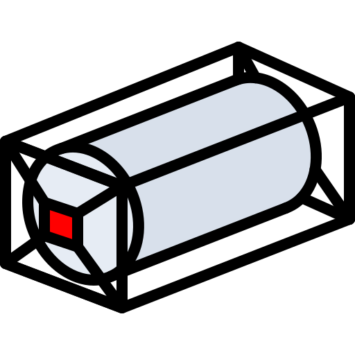

Shipment completion
Recognised delivery to Safripol against the 20,390.40 MT drawdown target
0.0%
Admin outturn—

Received at Connect—

Delivered to Safripol—
Remaining commitment—
Cumulative offtake against target
Daily delivered MT and loads
Actual offloaded MT by ISO-tainer
Recognised tonnage: Loaded Weight (KG's) ÷ 1,000

Turnaround against target
Exceptions requiring attention
Plan versus actual cumulative MT
Delivered MT by isotainer
Receipts into Connect Logistics
Delivery detail by day
Average decant and interval by day
Isotainers completed per day
Shift output against plan
Performance by team
Shift log
Decant activity by hour of day
Performance by isotainer
Cycle stages against target
Derived from GPS tracking, not captured by handTurnaround trend
Average dwell by site
Site dwell performance
Dwell by isotainer
Time lost by reason
Time lost by accountable party
Time lost register
All exceptions
MV TAC IMOLA · Voyage 33 final report
Vessel discharge reconciled to Safripol administration receipts
Outturn reconciliation
A&M physical outturn versus Connect administration receipt basis